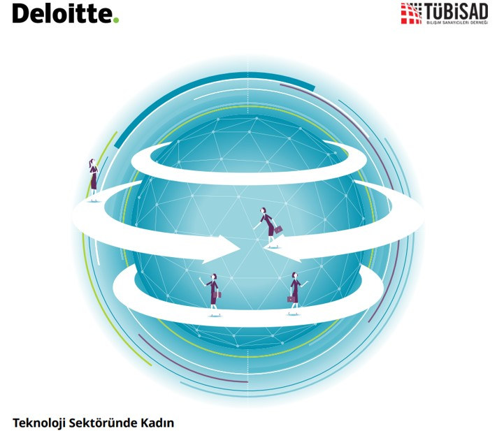
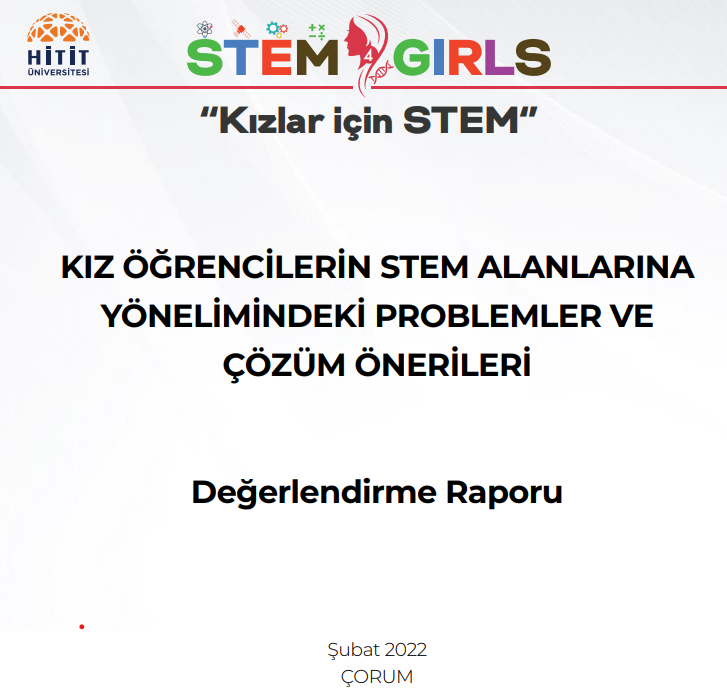

TÜBİSAD,"Toplumsal cinsiyet eşitliği norm haline gelmeli ve kadın liderler artmalı" diyor
Atılacak çok adım yapılacak çok iş var. Hadi gelin sektöre, beraber çalışalım!
"Kız çocuklarının STEM alanlarına katılımlarının düşük olmasında, kız çocuklarına ve kadınlara atfedilen toplumsal roller ve beklentilerin etkisinin büyük olduğu görülmektedir."

Toplumsal Cinsiyet Eşitsizlikleri Araştırma Ve İzleme Raporu
"Teknolojide şirketlerin %91,1'inin erkek çalışanlarına kadın çalışanlarından daha fazla ödeme yaptığını gösteriyor."
"Kadınlar, toplumsal cinsiyet rolleri nedeniyle iş hayatında erkeklerle eşit koşullarda rekabet edememektedir."
"Amaç sektörde gelişme ve büyüme anlamında devamlılığı sağlamak ise önemli olan kadınları sadece erkeklerin tamamlayıcısı olarak değerlendirmemek; kadınlara da eğitim ve istihdam alanında eşit imkan ve olanaklar sunulduğunda erkeklerle aynı başarıya ulaşabileceklerinin farkına varılmasıdır."

“...Kadınların erkeklerden alt kademe olarak görülecek hiçbir yüzünün olmadığını kanıtlamış, kendine yetebilen, kimseye ihtiyacı olmayan diğer kadınları cesaretlendiren bir kadın olarak hayal ediyorum.”
Kız Öğrencilerinin STEM Alanlarına Yönelimindeki Problemler ve Çözüm Önerileri